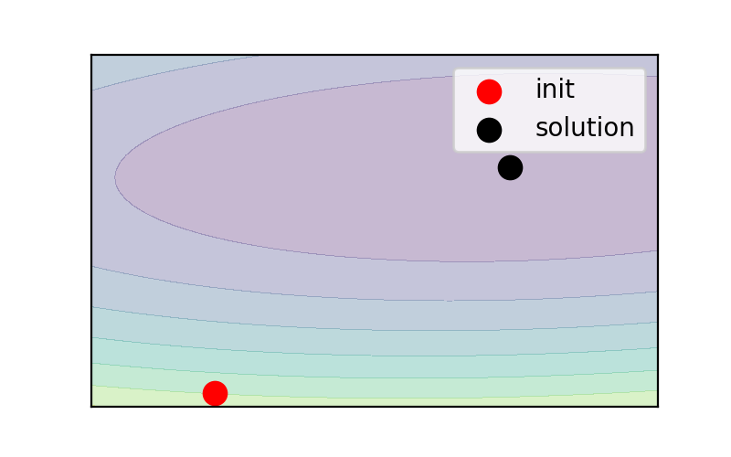
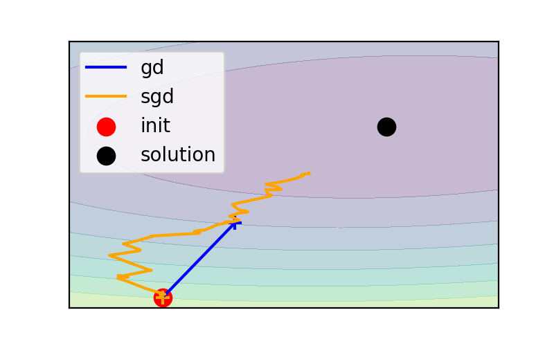
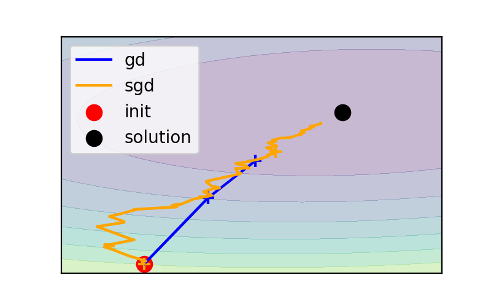
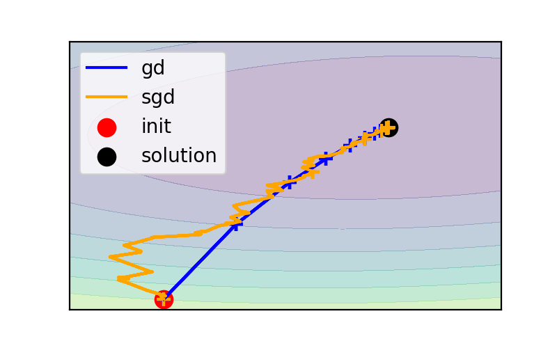
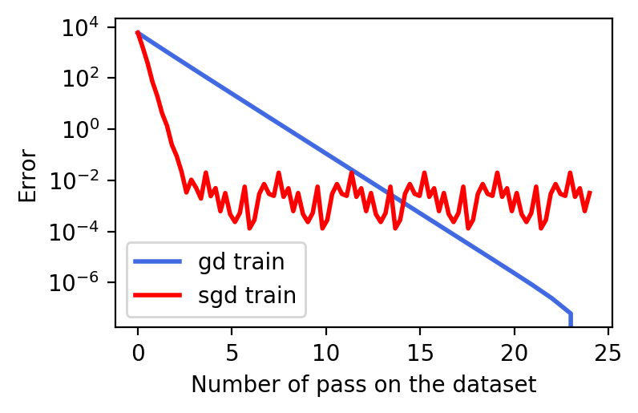
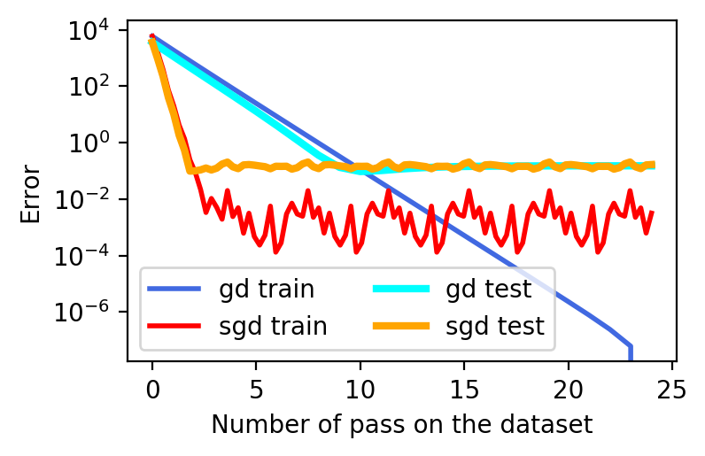
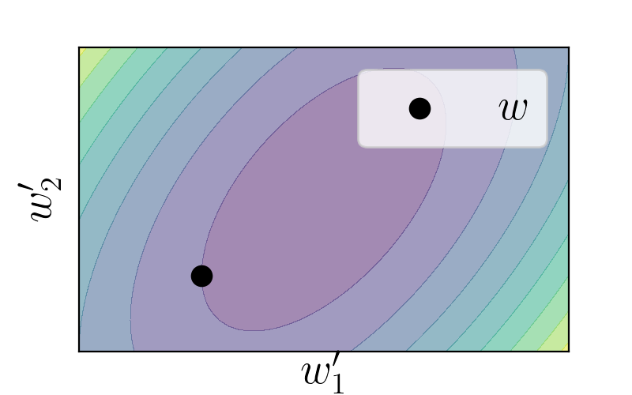
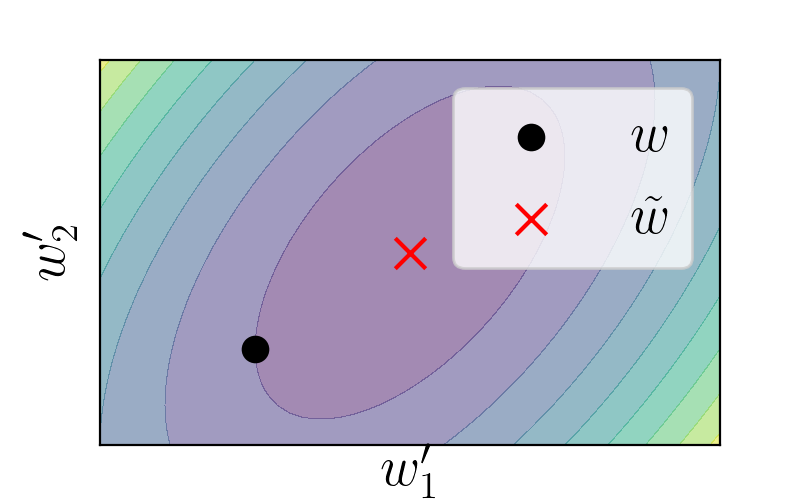
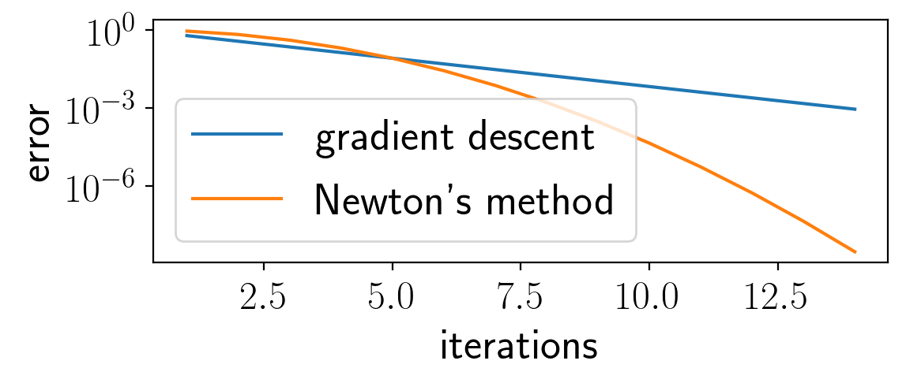

class: center, middle # Optimization for machine learning Pierre Ablin .affiliations[  ] --- # Gradient descent is the most basic and simplest method for machine learning optimization -- However, in many cases we can do better ! -- This class: - Exploit the many samples we have (stochatic methods) -- - Exploit geometry (second order methods) --- # Stochastic methods --- # Sum structure Recall the cost function for linear regression: $$ \ell(\mathbf{w}) = \sum_{i=1}^n(\mathbf{w}^{\top}\mathbf{x}_i - y_i)^2 $$ -- Like most cost functions in machine learning, it writes as a **sum over samples**. -- The gradient of $\ell$ therefore also writes as a sum over samples: $$ \nabla \ell(\mathbf{w}) = \sum_{i=1}^n \nabla(\mathbf{w}^{\top}\mathbf{x}_i - y_i)^2 $$ --- # Sum structure Recall the cost function for linear regression: $$ \ell(\mathbf{w}) = \sum_{i=1}^n(\mathbf{w}^{\top}\mathbf{x}_i - y_i)^2 $$ Like most cost functions in machine learning, it writes as a **sum over samples**. The gradient of $\ell$ therefore also writes as a sum over samples: $$ \nabla \ell(\mathbf{w}) = 2 \sum_{i=1}^n (\mathbf{w}^{\top}\mathbf{x}_i - y_i)\mathbf{x}_i $$ --- # Sum structure $$ \nabla \ell(\mathbf{w}) = 2 \sum_{i=1}^n (\mathbf{w}^{\top}\mathbf{x}_i - y_i)\mathbf{x}_i $$ -- Imagine that we have $10^6$ samples. In order to implement gradient descent, we need to compute $\nabla \ell(\mathbf{w})$ -- $10^6$ operations at each iteration... :( --- # Cats and dogs Imagine that you want to train a neural network to recognize cats and dogs -- You download 1000000 images of cats and dogs -- If you want to train the neural network with gradient descent, in order to update the weights once, you need to make a pass on the whole dataset: ** extremely slow ** --- # Stochastic gradient descent $$ \nabla \ell(\mathbf{w}) = 2 \sum_{i=1}^n (\mathbf{w}^{\top}\mathbf{x}_i - y_i)\mathbf{x}_i $$ Life-saving idea: Use the "gradient" associated with one sample -- Gradient descent: - $w\leftarrow w - 0.1 \times \nabla \ell(\mathbf{w})$ -- Stochastic gradient descent: - Choose index $i$ - $w\leftarrow w - 0.1 \times (\mathbf{w}^{\top}\mathbf{x}_i - y_i)\mathbf{x}_i$ --- # Stochastic gradient descent - Choose index $i$ - $w\leftarrow w - 0.1 \times (\mathbf{w}^{\top}\mathbf{x}_i - y_i)\mathbf{x}_i$ -- **Advantage** - One update per sample: if we have $10^6$ samples, SGD does $10^6$ updates when gradient descent only does one ! -- **Drawback** - The update direction is noisy, the gradient estimate has lots of variance: we are not sure that one update decreases the cost function / brings us closer to the solution. --- # Illustration .center[  <br/> ] --- # Illustration .center[  <br/> ] --- # Illustration .center[  <br/> ] --- # Illustration .center[ <br/> ] --- # Illustration .center[ <br/> ] --- # Illustration .center[ <br/> ] --- # Illustration .center[ <br/> ] --- # Illustration .center[  <br/> ] --- # Illustration .center[ <br/> ] --- # SGD learning curves Because of gradient variance, SGD struggles to optimize perfectly, while GD does it well .center[  <br/> ] --- # SGD learning curves The catch: you **do not care about perfect optimization** (after a while, test error stops decreasing) .center[  <br/> ] --- # Uses of SGD - SGD is at the core of deep learning: all deep neural networks are optimized with variants of SGD - Generally, it is used when the number of samples is high - Many variants are developed to alleviate the variance problem --- # Squeezing more from geometry: second order methods --- # All functions look the same $f$ a smooth function of $p$ variables We want to minimize $f$, and find its minimizer $\tilde{w}$ -- Around each point $w$, $f$ looks like a quadratic function (extension of second order polynomials): -- For $w'$ close enough from $w$ (Taylor expansion): $$f(w') \simeq f(w) + (w' - w)^{\top}\nabla f(w) + \frac12 (w' - w)^{\top}H(w' - w) $$ -- - $\nabla f(w)$ is the gradient, it is a vector of size $p$ - $H$ is the Hessian at $w$, it is a matrix of size $p\times p$ - We assume for simplicity that $H$ is a positive matrix --- # Quadratic functions $$\psi(w') = f(w) + (w' - w)^{\top}\nabla f(w) + \frac12 (w' - w)^{\top}H(w' - w) $$ The level lines of this function are ellipses. -- In 2D: .center[  <br/> ] --- # Minimizing quadratic functions We want to minimize $f$, and $f$ looks like $\psi$ -- - Minimize $\psi$ instead .center[  <br/> ] --- # Newton's method $$\psi(w') = f(w) + (w' - w)^{\top}\nabla f(w) + \frac12 (w' - w)^{\top}H(w' - w) $$ - $\nabla \psi(w') = \nabla f(w) + H(w' - w)$ -- - Hence, $\psi$ is minimized for $\tilde{w} = w - H^{-1}\nabla f(w)$ -- Same as gradient descent, but with a *metric change*: | Gradient descent | Newton's method| | ------------ | ----------- | | $$w\leftarrow w - \eta \nabla f(w)$$ | $$w\leftarrow w - H^{-1} \nabla f(w)$$ | --- # Newton's method: convergence speed $$w\leftarrow w - H^{-1} \nabla f(w)$$ Quadratic convergence speed (=as fast as it gets ! ) Rule of thumb: - If at iteration $n$, error $= 10^{-3}$ -- - at iteration $n+1$, error$=10^{-6}$ -- .center[  <br/> ] --- # Newton's method is never used in practice... -- Because it requires computing the Hessian matrix at each iteration - Gradient descent: gradient has $p$ coefficents -- - Newton's method: Hessian has $p^2$ coefficients: ** much more expensive ** -- Because we need to invert a big linear system - Computing $H^{-1}\nabla f (w)$ is very expensive --- # We use quasi-Newton methods instead Goal: imitate Newton's direction $H^{-1}\nabla f(w)$, but at a lower cost.